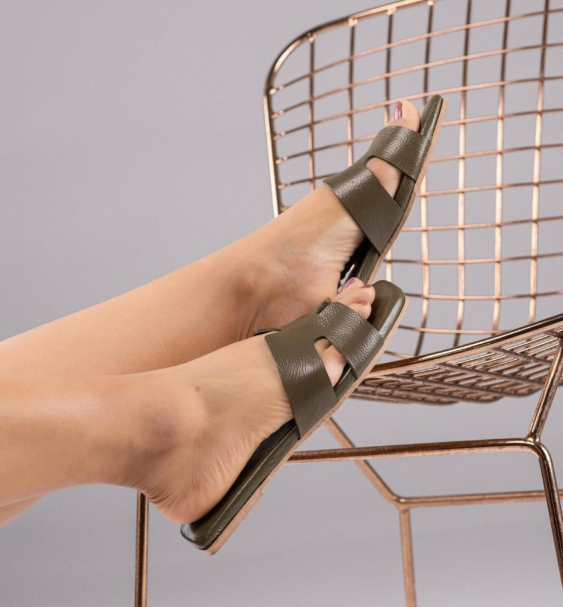
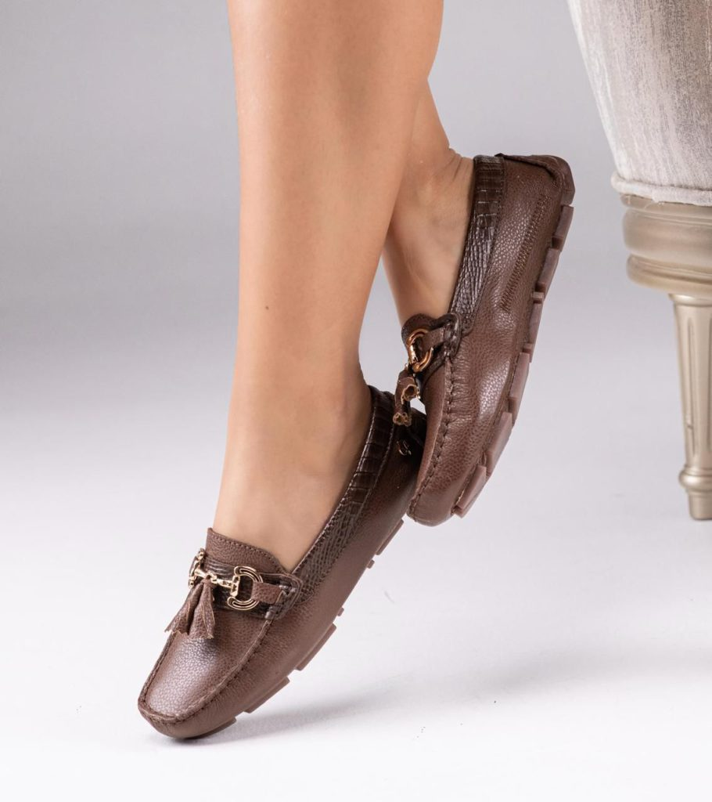

CUERO. DISEÑO. BUCARAMANGA.
TU TIENDA.
SU PRÓXIMO
PAR.
Tres formas de llevar Lemon a tu negocio. Calzado en cuero, fabricado en Bucaramanga.
Armar mi selección ↗pares para empezar
Mínimo del programa mayorista


UNA COLECCIÓN CON OPCIONES
¿Cuál va con tu tienda?
Explora modelos del catálogo real.
Los precios mayoristas los confirma Lemon.
01 / SANDALIAS
Sandalias Eva
Una silueta abierta, con dos tiras y un acabado de cuero que deja el material a la vista.
Ver modelo en Lemon Shoes ↗DE FÁBRICA A TU NEGOCIO
Empieza por
una buena mezcla.
El programa mayorista de Lemon comienza en 8 pares. Selecciona referencias y tallas; después consulta la lista de precios y las condiciones directamente con la marca.
- 01 Elige tus modelos.
- 02 Organiza tallas y cantidades.
- 03 Consulta a Lemon antes de comprar.
ESTRATEGIA DE AUTOMATIZACIÓN · SAMUEL ACUÑA
Ocho pares con una intención de colección.
Lo observado. Lemon tiene un programa mayorista que comienza en ocho pares. Esta propuesta reúne Eva, Carla y Dallas y permite armar una selección antes de conversar.
Hipótesis para validar. Llegar con un surtido por modelo y talla podría facilitar la primera consulta mayorista. La mezcla conveniente para cada tienda debe validarse con el comprador y Lemon.
Automatización a implementar. Convertir la selección de ocho pares en una solicitud por referencia y talla; avisar al asesor y registrar cambios de cotización. Después, vincular el pedido confirmado para preparar futuras reposiciones. La integración comercial se acordaría con Lemon.
TRES PRIORIDADES, EN ESTE ORDEN
- 01
Separar la entrada mayorista
Llevar a los dueños de tienda al programa de ocho pares y al catálogo correspondiente. Mantener el recorrido minorista aparte para que cada comprador vea condiciones pertinentes.
- 02
Construir el primer surtido
Seleccionar modelos y tallas con cantidades explícitas. Lemon confirma colores, disponibilidad, tarifa mayorista y envío; los productos elegidos no equivalen a reserva.
- 03
Aprender de la recompra
Registrar la selección cotizada y el pedido pagado. Con ventas reales aportadas por la tienda, proponer reposición por modelo y talla, sin afirmar cuáles rotan mejor de antemano.
Qué medir si se implementa
Selecciones de ocho pares · consultas mayoristas · primeros pedidos pagados · recompra por referencia
Son indicadores propuestos, no resultados obtenidos. Esta demostración no instala seguimiento ni integra sistemas internos.Base: catálogo público investigado el 1 de noviembre de 2026. Fuente oficial 1 · Fuente oficial 2. Estrategia independiente preparada el 2 de noviembre; su ejecución y condiciones se acuerdan con Lemon Shoes.